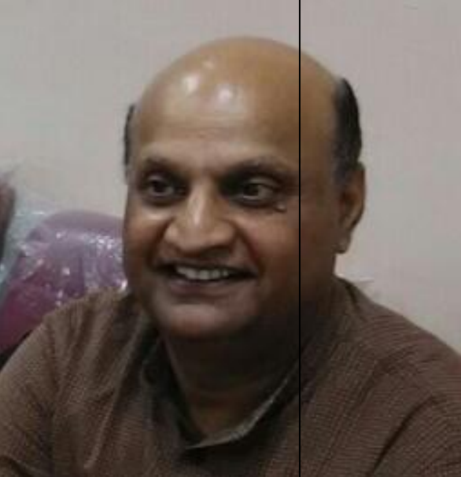

- HISTORY OF INDIA- 750 AD – 1206
- HISTORY OF INDIA- 750 AD – 1206 – 1550 AD
- HISTORY OF INDIA- 750 AD – 1707 AD – 1950 AD
- ENVIRONMENTAL ISSUES IN INDIA
- MODERN DELHI
- ISSUES IN WORLD HISTORY
- SOCIAL FORMATIONS AND CULTURAL PATTERNS OF ANCIENT AND MEDIEVAL WORLD

Dr. Narendara Kumar Pandey
Associate Professor

Contact Details
-
Address
- E - 405, Shubham Apartments, Plot - 13, Sector – 22, Dwarka, New Delhi – 110073
-
Phone No Office
- 011 – 424782823
-
Mobile
- 9810119138
-
Email
- npandey203354@gmail.com
Education
Career Profile
- Ph.D. in History B.B. Ambedkar, University of Bihar 1994
- M.A. in History University of Delhi 1983
- B.A. (Honours) in History Patna University 1981
- Taught for 2.5 years in Dayal Singh College of the University of Delhi between 1984 and 1987.
- Taught undergraduate classes in the Campus of Open Learning, Delhi University.
- Taught undergraduate classes in NCWBE of Delhi University in the year 2002 – 2003.
- Taught undergraduate classes in IGNOU in 1995 – 1996.
- Taught for one year in the College of Arts and Social Sciences, Eritrea as an Assistant Professor between 20th April 2008 and 30th March 2009.
Education
Experience
Subjects Taught
Research Projects
- Principal investigator of an Innovation Project sponsored by Delhi University on questions of Agrarian unrest and peasant suicide in the year 2013.
- Principal Investigator of an Innovation Project sponsored by Delhi University on the language of knowledge in the year 2014.
- Guided in Research - Examined a Ph.D. thesis sent by B.B. Ambedkar University, Muzaffarpur in 2013.
Conference Participation & Paper Presentations
- Participated in two day National Seminar on HISTORIOGRAPHY organized by Department of History, Shivaji College, Delhi in Feb 2015.
- Participated in two day National Consultation on Skills in Higher Education organized by Department of Higher Education of MHRD of Government of India in December 2014.
- Participated in one day National Seminar on The New Avatar of Planning Commission organized by India Policy Foundation in November 2014.
- Participated in one day National Seminar on Integral Humanism organized by India Policy Foundation, New Delhi in September 2014.
- Participated in an International Workshop organized by the Department of Sanskrit of University of Delhi in the South Campus, in 2013.
- Participated in the workshop on Evaluation Methodology from 8th November to 10th November 2012 conducted by CPDHE of University of Delhi.
- Participated in a two day orientation programme organized by Department of History on Environmental Studies in the year 2012.
- Participated in the Academic Congress organized by the University of Delhi, between 6th and 7th September 2012.
- Presented a paper on the Language of Knowledge in the Academic Congress organized by Delhi University held on 6 – 7 September 2012.
- Presented a paper on Chipko Movement in a refresher course conducted by CPDHE of the University of Delhi, in February 2007.
- Presented a paper on Gendered Reading of Stories of Manu Bhandari in a refresher course conducted by CPDHE of the University of Delhi, in January 2007.
- Presented a paper on the Changing Role of Women in Contemporary Time in an orientation programme conducted by CPDHE of University of Delhi in the year 1997.
- Participated in a 3 week refresher course in the subject – Women's Studies in January 2007, conducted by CPDHE of University of Delhi.
- Participated in a 3 week refresher course on the subject Environmental Studies from February to March 2007, conducted by CPDHE of University of Delhi.
- Participated in an orientation programme conducted by CPDHE of University of Delhi in the year 1997.
Area of interest
Admin. Assignments
Areas of Interest
- Agrarian History
- Gender Studies
- Ecology and Environment
Administrative Assignments
- Assistant Co-ordinator at RLA study centre, IGNOU between 1999 and 2000.
- In-charge of NCC at Ram Lal Anand College between 1997 and 1999.
- Coordinator NSS of Ram Lal Anand College between 1998 – 1999.
- Deputy Superintendent of University examinations between 2013 – 2016.
- Convenor of Discipline Committee of the Staff Council, Delhi University from 2012 – 2014.
- Advisor to student's union, Ram Lal Anand College, 2012 & 2015.
Publications Profile
- The Language of Knowledge : A Case study of English-Medium Teaching in Institution of higher learning in Delhi (2014) - The Delhi University E Journal of Humanities & Social Sciences
- Vocalising the Silence: Women Ecological Warriors - Gaura Devi (1925-91) A mind of her own - Drashta Research Journal
- Recluse to Revolutionary: Sahajanand Saraswati (1929-40) - South Asia Journal of Multidisciplinary Studies (SAJMS)
- Redicalizing Peasants, Envisioning New Order: Revisiting Swami as State Falters - Global Journal of MultiDisciplinary Studies
- Marginal Women as Saviours of Ecology - Chipko (1973-81 A.D.) - A Reappraisal - Global Journal of MultiDisciplinary Studies
- The Importance of Environment - Samajiki Sandarsh
- Decline of Harappa: An Ecological Perspective - Varanasi Management Review
- Representation of Women in Historical Traditions - Abhisecaham
- Religion as a Force for Conservation - Abhyudayah
- Bharat me Etihas Lekhan ke Srout kya ho? - Annals of MultiDisciplinary Research
- Bhartiya Sanvidan : Prmukh Vishestaye Aur Samsamayik Chunotiya - Vaichariki
- Bhasha Aur Rajniti ka Badlata Swarup - Annals of MultiDisciplinary Research
- Bharat ka Vibhajan Kitna Apriharya - Sodha Pravaha
- Madhykalin stri santo k samajik chetna - Jigyasa
- Dr. Shri Krishn singh, Congress tatha Bharat sarkar adhiniyam, ek punraavlokan - IJOHMN
- Dr. Shri Krishn Singh aur bihar me jamidari unmulan ki sarthakata - Vak Sudha
- Dr. Shri Krishn Singh : ek vahuaayami vaktitatv - Hindu
- Parmparik udhogo ka patan ya viudogikaran - Sundries Research Mechanism
- Vanijayaran evm krishi me mandi - Research Highlights
- Aadhunik udhogo ka vikas (1914-1947) - Ayan
- Sindhu ghati ki sabhyta - Pratah Varta
- Antar-kshetriya aur samundrik vyapar (750-1200) - Pratah Varta
- 1935 ka bharat sarkar adhiniyam - Pratah varta
- Kshetriya aur sthaniya bhashao me likha gya etihas - Pratah Varta
- Dr. Shre Krishn Singh : Etihas ke aayine me (BOOK) - Sat Sahitya Prakashan, New Delhi, 2016 - ISBN: 978-81-7721-299-0
Awards and Distinctions
- RECEIVED JUNIOR RESEARCH FELLOWSHIP (JRF) AND NATIONAL ELIGIBLITY TEST (NET) CONDUCTED BY UGC.
Other Activities
- Led a team of students on Gyanodaya – 5 to North-east states in December 2014.
- Represented the teachers in the governing body of Ram Lal Anand College in the year 2002 – 2003.
- Elected as a member of Delhi University Teacher's association (DUTA) Executive in 1997.
- Elected as the President of Staff Association of Ram Lal Anand College in the year 2006.
- Member of a Task Force constituted by DUTA to address the malaise of "Teacher Absenteeism" in the University of Delhi.
- Member Bihar Itihas Parishad
- Member Akhil Bhartiye Itihas Sankalan Yojana